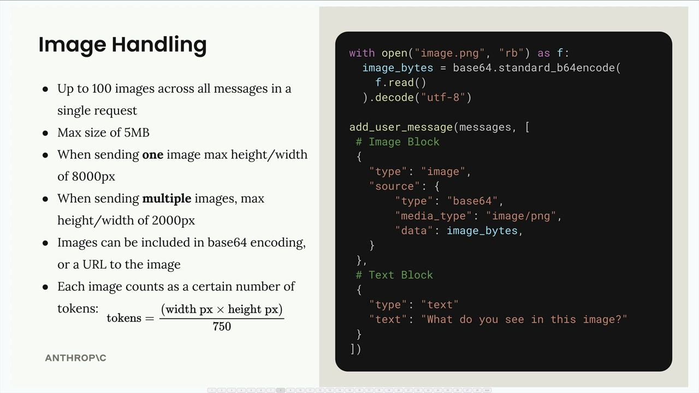
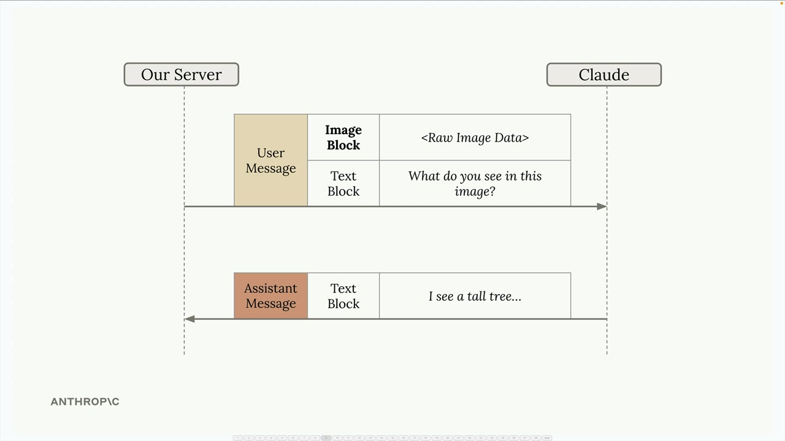
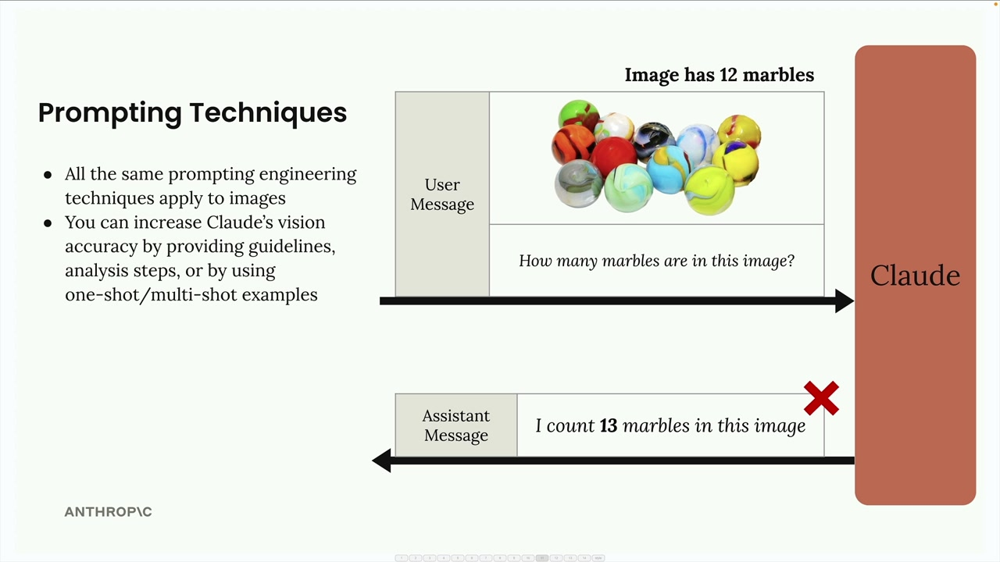
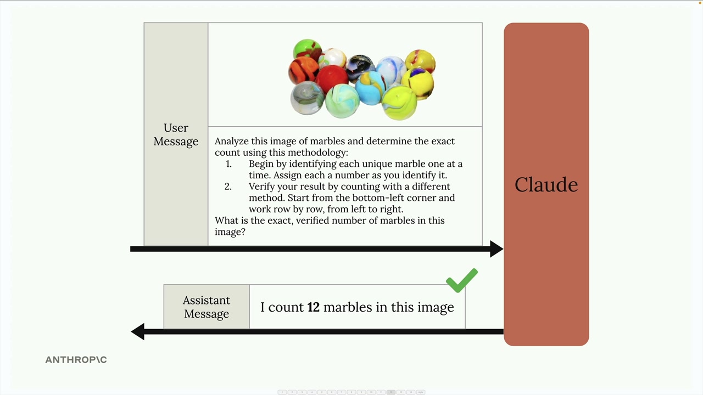
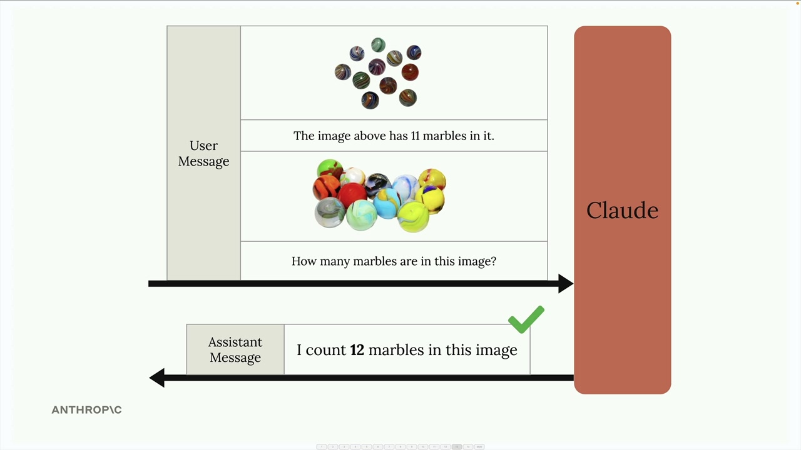
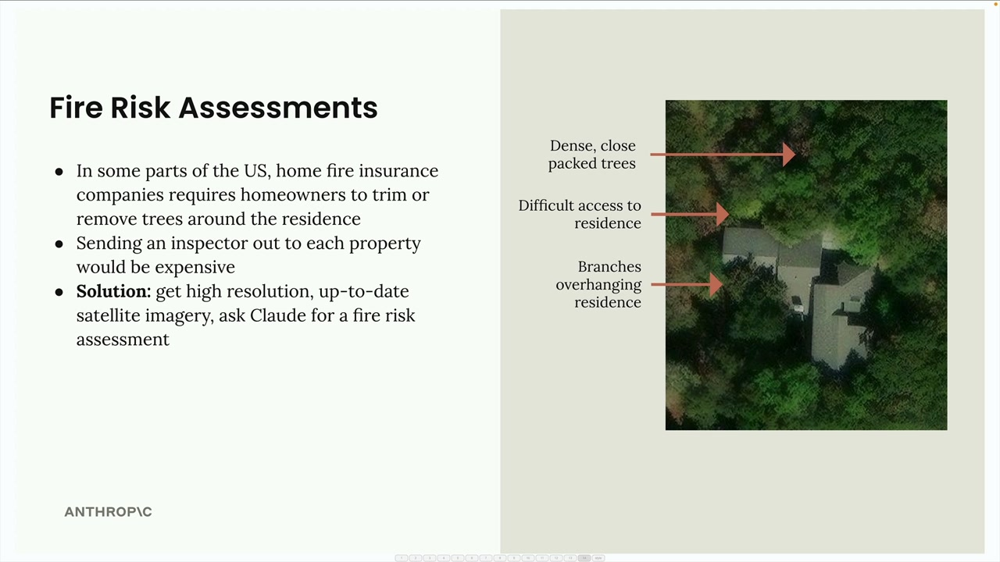

Изображения
Чему научитесь
Видео 10:16 и текст урока
К концу урока вы сможете:
- отправить изображение в блоке
imageвместе с текстом; - учитывать ограничения и стоимость изображений;
- применять приёмы промптинга к анализу изображений.
Видео и текст урока.
Смотреть урок на Skilljar Image support · 10:16Возможности зрения Claude позволяют включать изображения в сообщения и просить Claude анализировать их самыми разными способами: описать, что на изображении, сравнить несколько изображений, посчитать объекты или выполнить сложный визуальный анализ.
Основы работы с изображениями

При работе с изображениями важно помнить об ограничениях:
- до 100 изображений во всех сообщениях одного запроса;
- не больше 5 МБ на изображение;
- для одного изображения — не больше 8000 px по высоте и ширине;
- для нескольких изображений — не больше 2000 px по высоте и ширине;
- изображение можно передать в base64 или ссылкой (URL);
- каждое изображение стоит токены в зависимости от размеров: токены = (ширина px × высота px) / 750.
Чтобы отправить изображение Claude, добавьте блок изображения в сообщение пользователя рядом с текстовыми блоками. Структура такая:
with open("image.png", "rb") as f:
image_bytes = base64.standard_b64encode(f.read()).decode("utf-8")
add_user_message(messages, [
# Image Block
{
"type": "image",
"source": {
"type": "base64",
"media_type": "image/png",
"data": image_bytes,
}
},
# Text Block
{
"type": "text",
"text": "What do you see in this image?"
}
])
Поток сообщений

Разговор идёт так же, как с текстом. Ваш сервер отправляет Claude сообщение пользователя с блоками изображения и текста, а Claude отвечает текстовым блоком с анализом.
Приёмы промптинга

Хороший результат с изображениями зависит от тех же приёмов prompt engineering, что и с текстом. Простые промпты часто дают плохой результат: например, вопрос «How many marbles are in this image?» может вернуть неверное число.
Точность Claude можно сильно повысить, если:
- дать подробные указания и шаги анализа;
- использовать one-shot или multi-shot примеры;
- разбить сложную задачу на шаги поменьше.
Пошаговый анализ

Вместо простого вопроса дайте Claude методику:
Analyze this image of marbles and determine the exact count using this methodology: 1. Begin by identifying each unique marble one at a time. Assign each a number as you identify it. 2. Verify your result by counting with a different method. Start from the bottom-left corner and work row by row, from left to right. What is the exact, verified number of marbles in this image?
One-shot примеры

Точность можно повысить и примерами в сообщении. Добавьте изображение с известным количеством, укажите правильный ответ, а затем спросите про нужное изображение. Так у Claude появляется ориентир — какой анализ вам нужен.
Реальный пример: оценка пожарного риска

Практическое применение — автоматическая оценка пожарного риска для страхования жилья. Вместо того чтобы отправлять инспекторов к каждому дому, страховые компании могут использовать спутниковые снимки и анализ Claude.
Система по спутниковому снимку определяет:
- густые, плотно стоящие деревья рядом с домом;
- затруднённый подъезд для экстренных служб;
- ветви, нависающие над домом.
Вместо простого промпта вроде «provide a fire risk score» хорошо структурированный промпт разбивает анализ на конкретные шаги:
Analyze the attached satellite image of a property with these specific steps: 1. Residence identification: Locate the primary residence on the property by looking for: - The largest roofed structure - Typical residential features (driveway connection, regular geometry) - Distinction from other structures (garages, sheds, pools) 2. Tree overhang analysis: Examine all trees near the primary residence: - Identify any trees whose canopy extends directly over any portion of the roof - Estimate the percentage of roof covered by overhanging branches (0-25%, 25-50%, 50-75%, 75%+) - Note particularly dense areas of overhang 3. Fire risk assessment: For any overhanging trees, evaluate: - Potential wildfire vulnerability (ember catch points, continuous fuel paths to structure) - Proximity to chimneys, vents, or other roof openings if visible - Areas where branches create a "bridge" between wildland vegetation and the structure 4. Defensible space identification: Assess the property's overall vegetative structure: - Identify if trees connect to form a continuous canopy over or near the home - Note any obvious fuel ladders (vegetation that can carry fire from ground to tree to roof) 5. Fire risk rating: Based on your analysis, assign a Fire Risk Rating from 1-4: - Rating 1 (Low Risk): No tree branches overhanging the roof, good defensible space around the home - Rating 2 (Moderate Risk): Minimal overhang (<25% of roof), some separation between tree canopies - Rating 3 (High Risk): Significant overhang (25-50% of roof), connected tree canopies, multiple vulnerability points - Rating 4 (Severe Risk): Extensive overhang (>50% of roof), dense vegetation against structure For each item above (1-5), write one sentence summarizing your findings, with your final response being the numerical rating.
Такой подробный промпт проводит Claude через системный анализ, и оценки получаются гораздо точнее и полезнее, чем на простой запрос.
Помните: приёмы промптинга, которые работают для текста, работают и для изображений. Вкладывайтесь в подробные структурированные промпты, а не надейтесь на простые вопросы, если нужен надёжный результат.
Дальше
Следующий урок — PDF: почти тот же код, но с блоком document.
Оригинал урока: Image support.